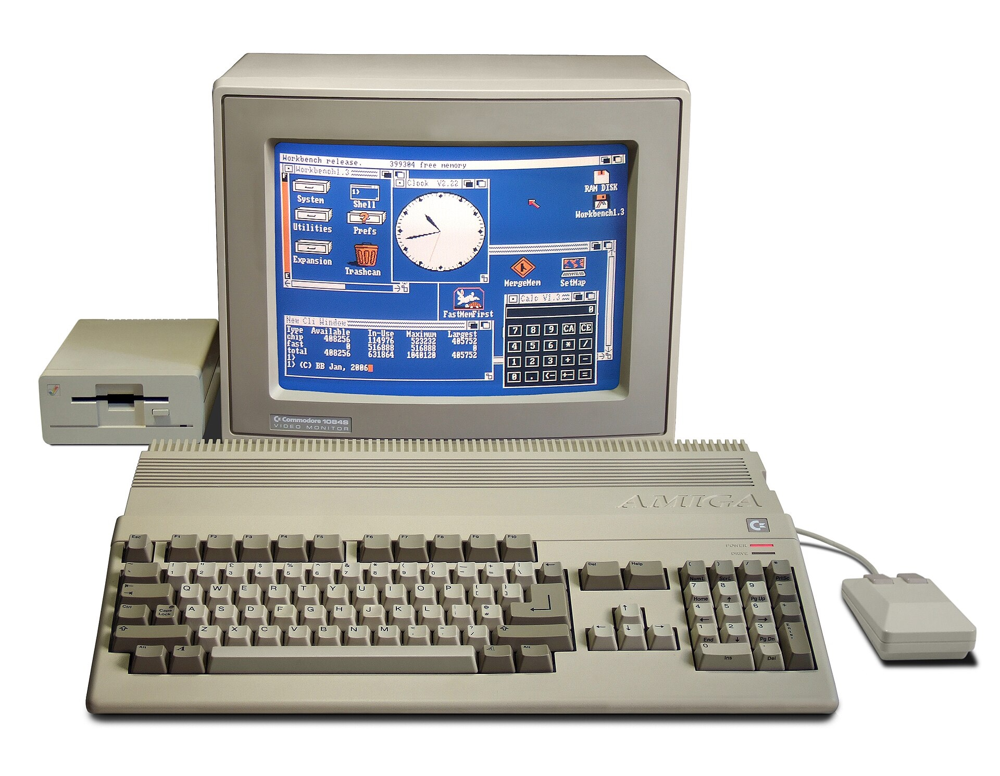
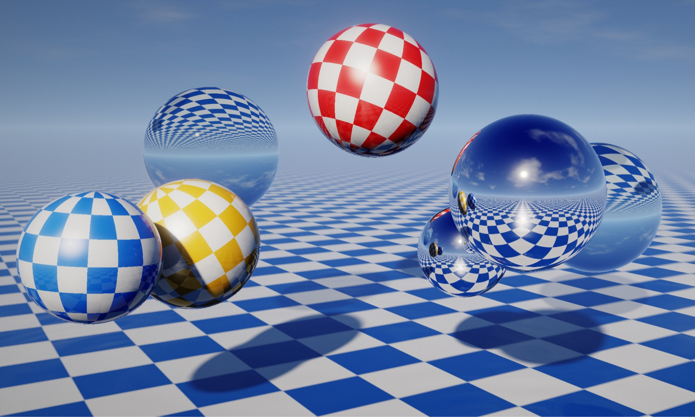
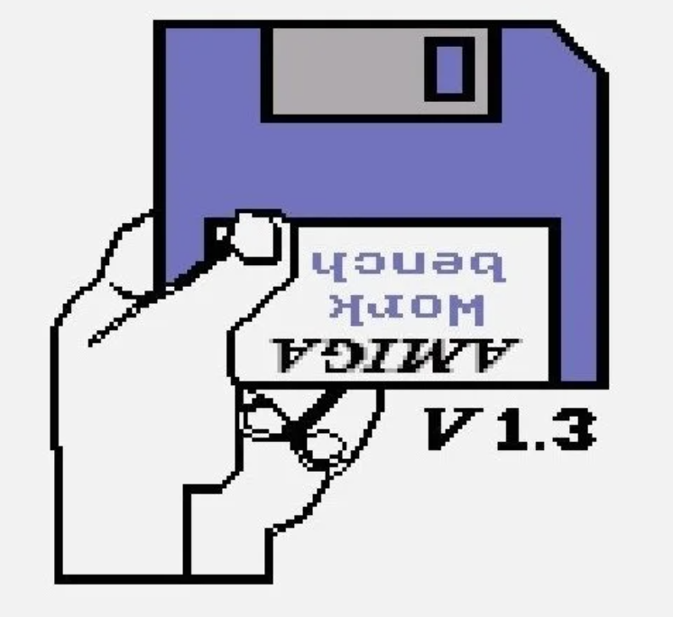

If you grew up in the golden era of home computing, you probably remember the exact feeling of sitting in front of a glowing CRT monitor and booting up a Commodore Amiga 500 for the first time.

When it arrived in 1987 with a 7MHz Motorola 68000 processor and half a megabyte of memory, the Amiga didn’t just feel like a hardware upgrade—it felt like being handed the keys to an infinite universe. Inside its case sat a trio of dedicated custom chips with almost mythical names: Copper, a tiny coprocessor that rewrote color registers on the fly as the electron beam swept down the screen; Blitter, which shoved blocks of graphics memory around faster than the CPU ever could; and Paula, which gave a generation of bedroom musicians four channels of 8-bit stereo sound.
Out of that modest silicon was born the legendary demoscene: a fiercely creative subculture of coders, pixel artists, and tracker musicians across Europe and beyond who competed to push the hardware far past what its engineers thought possible. Their demos weren't mere technical benchmarks. They were digital art—impossible-looking 3D animations, raster bars, and synchronized soundtracks built simply to say, "Look what we can make this machine do."
None of that magic came free. It required hand-written assembly language, counting individual CPU cycles, and months of late nights by an entire crew of specialists. As a kid, though, you didn't dwell on the constraints. You looked at the screen and felt a sense of wonder everyday regarding what to do next.
Last night, decades later, that exact same feeling hit me all over again.
One Prompt and the Ratio of Wonder
Seeing how rapidly creative coding has evolved, I decided to run a casual experiment with Claude Opus. I wanted to see what would happen if I asked a frontier AI model to channel the spirit of those 1980s and 90s bedroom coders.
I gave it no architectural diagrams, no technical specifications, and no weeks of planning. My entire prompt was a single sentence:
"Can you make a mega demo that pays homage to the classic Amiga games, demos, and music, and brings them to a next level that can only be done with a modern PC?"
A few brief clarifying questions later, out came Beyond the Copper—a sprawling, multi-part audiovisual production named in honor of that classic Amiga coprocessor. It runs directly in the browser, synthesizes its own music, and unmistakably carries the soul of a classic mega demo.

Beyond the Copper: Modern “Amiga” Megademo
When my friend Bilgem mentioned in our group chat that he had caught the opening scene and planned to sit down and watch the rest in detail, I immediately had to temper his expectations: "Don't expect too much—it's just impressive considering how minimal my own contribution was."
And that is the heart of what struck me. What took my breath away wasn't that the demo was flawless—it wasn't. It was the ratio. My contribution was close to the absolute minimum: a spark of nostalgia, one sentence of intent, and a handful of steering nudges. Yet everything that used to represent months of grueling technical execution was simply handled.
The next morning, I caught myself texting my friends: I feel like a kid who just got a new Amiga. The possibilities are endless, and the potential is infinite!
Fractals and Maestros
There is a catch to this newfound abundance, and it is a revealing one.
As I watched Beyond the Copper unfold, I noticed a hilarious quirk: left to its own instincts on a graphics project, Opus has an almost irresistible urge to draw fractals everywhere. Ask an AI for a homage with minimal guidance, and you get the competent median homage—the mathematical patterns and visual tropes everyone expects, rendered cleanly and excessively.
Producing an output is no longer the same thing as creating something great.
An AI can write the shaders, wire up the audio synthesis, and generate a thousand variations at blinding speed. But it does not have personal memories of loading floppy disks in 1989. It doesn't have taste, restraint, or a heartbeat. It is a world-class orchestra sitting quietly in the pit, capable of playing any note ever written, waiting for a conductor.
In the hands of a casual observer, the orchestra plays fractals. But in the hands of a true maestro—someone who knows which effect to cut, which transition earns its place, which melody carries a scene, and when to demand a fifth revision—the exact same tool can birth a masterpiece.
The old skills haven't vanished; they have moved up a level of abstraction. The creator who once counted CPU cycles now practices curation, direction, and vision. The tool raises the floor for everyone, while blowing the ceiling wide open for those who deeply care.
When the Cost of Curiosity Approaches Zero
We usually talk about AI in the dry language of corporate productivity: How much faster can we ship code? How many support tickets can we close? How much revenue we can generate?
Those questions matter, but they miss the deeper cultural earthquake. AI is collapsing the cost of curiosity.
For almost all of human history, the distance between having an idea and finding out if it worked was guarded by steep, unforgiving walls. You might imagine a game in your head, hear a symphony, or envision a piece of software that solves a frustrating problem in your daily workflow. Yet unless you had years to master the underlying craft—or the capital to hire a team who already had—most ideas died quietly in that gap. Not because they were bad ideas, but because trying them was too expensive.
When the first working prototype of an idea becomes nearly free, the feedback loop between imagination and reality becomes immediate. And when experimentation is cheap, we are suddenly allowed to be playful again. We can follow strange tangents. We can build things without needing to justify every afternoon with a business case.
The first version of a project is rarely the destination; it is a conversation with possibility. You build a rough draft, see it move on screen, and only then discover what you actually wanted to make. By removing the prerequisite of mastery just to begin, millions of former spectators can now step onto the field as explorers.
Who Owns the Next Twenty Years?
Whenever technological waves hit, people inevitably ask the same anxious question: "Which profession should I choose? What jobs will be in high demand and make money in the next 5, 10, or 20 years?"
Looking at the shift from that 1987 Amiga to the prompt window on my desk today, I think the answer has finally crystallized: The future belongs to those who create the future.
We each have eight to twelve productive hours in a day, the defining divide of the coming decades won't be your static job title. It will be what you choose to generate with those hours.
Increasingly, those who pull ahead will be the individuals who deliberately direct AI across three personal pillars:
- Deep, Proprietary Knowledge: Anyone can ask a chatbot for a generic summary. The explorers of the next decade will use AI as a tireless research partner to venture into unfamiliar domains, synthesizing deeply personalized bodies of knowledge. The insights you cultivate by asking better, harder follow-up questions will belong to you—with a depth no passive consumer can replicate.
- Bespoke Software: Software is no longer an industrial artifact built only by large corporations for mass markets. A teacher can build an interactive physics simulation for Tuesday's class; a doctor, a designer, or an entrepreneur can spin up software tailored to solve the exact friction points of their own life and work.
- A Personal Arsenal of Tools: Beyond single projects, the most effective builders are using AI to forge their own custom instruments, workflows, and toolkits. They are assembling personal solutions that nobody else has—creating compounding leverage where every tool they build makes the next one easier to imagine.
When technical barriers fall, human barriers become the only ones left standing. Those who take the initiative—generating deep knowledge, original software, and custom toolkits—will shape the world ahead. Those who wait to be told what to do will be left behind.
The Hand Holding the Disk
In 1987, if you turned on an Amiga 500 without a program loaded, it greeted you with a stark, unforgettable image: a pixelated white screen showing a hand holding a blue Kickstart floppy disk, silently waiting for you to insert something and bring the machine to life.

The blinking cursor of a modern AI interface waits the exact same way.
For a growing universe of creative and intellectual work, all our comfortable old excuses have evaporated. You don't need to finish another six-month course first. You don't need to wait until you've raised seed funding or assembled the perfect engineering team. The distance between "What if?" and a working answer has never been shorter.
The playground is open. The orchestra is tuned in the pit, waiting for your downbeat. And the only limits left that truly matter are your own initiative, your taste, and your courage to start.
So—what will you build today?
Comments